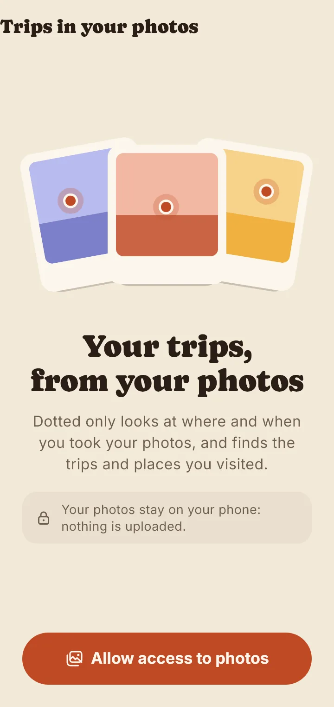
From your photos
Dotted only looks at where and when your photos were taken. It finds home, your trips and the stops, and a trip in progress picks up new photos on its own.
A trip, a road trip or every place you've been: from your photos or a Google Maps list to a story to share.
For Android and iPhone, in Italian and English.

Start from your photos, from a Google Maps list or from scratch. Dotted makes the map with one tap.

Dotted only looks at where and when your photos were taken. It finds home, your trips and the stops, and a trip in progress picks up new photos on its own.
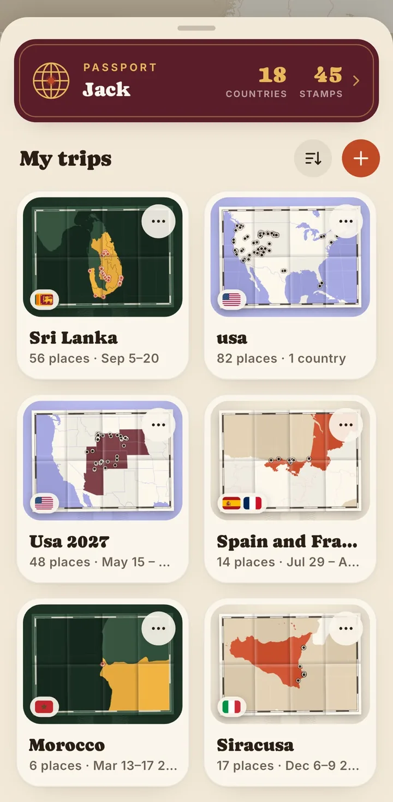
Share a list to Dotted. When you update the map, new places come in and removed ones leave, while your own edits stay.
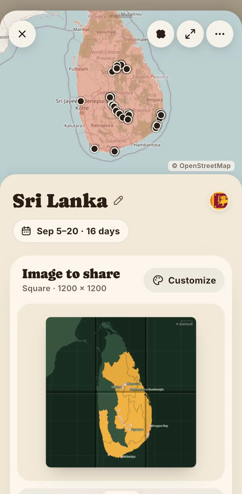
Pick the format, the style and the framing. Show countries and regions you visited, place names, UNESCO sites, parks and peaks.
The home is a paper map with a dot on every place and the countries you've been to colored in. Pull up the sheet for your passport and your trips.
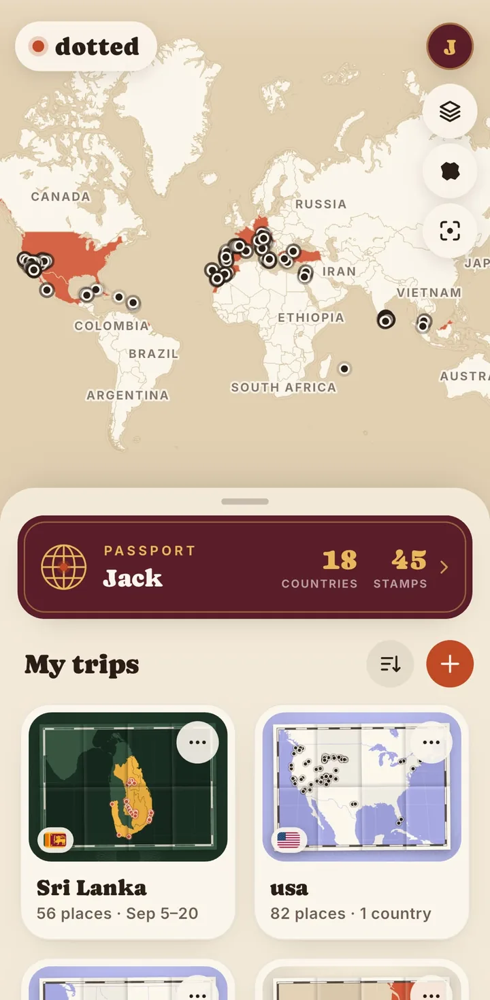
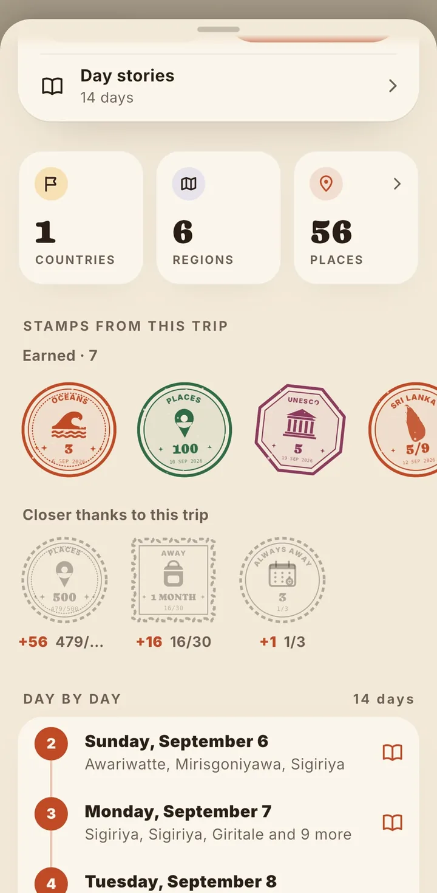
Each day gets its own 9:16 story, ready for Instagram: the places of the day, the times, and one of your photos as a polaroid.
It fills up from your trips, your Google Maps lists and the places you add by hand. Choose the cover, open the map full screen and collect stamps along the way.
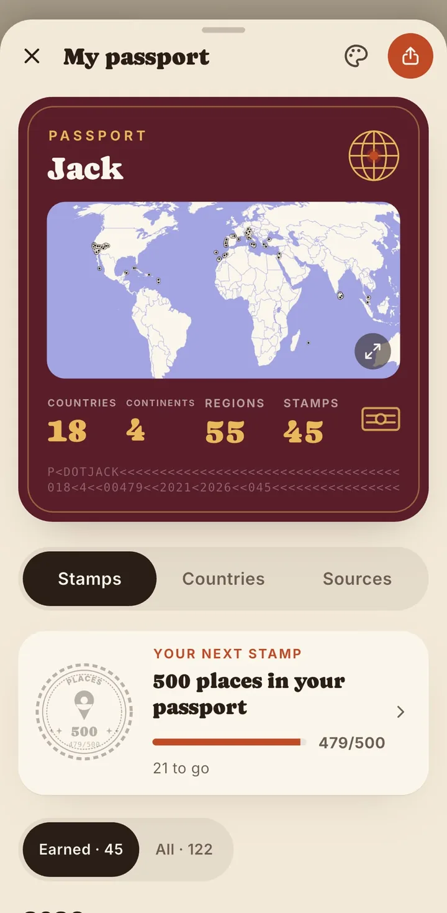
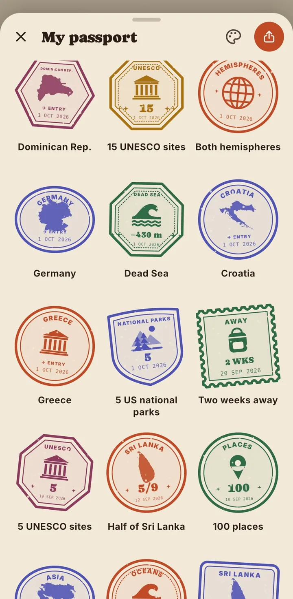
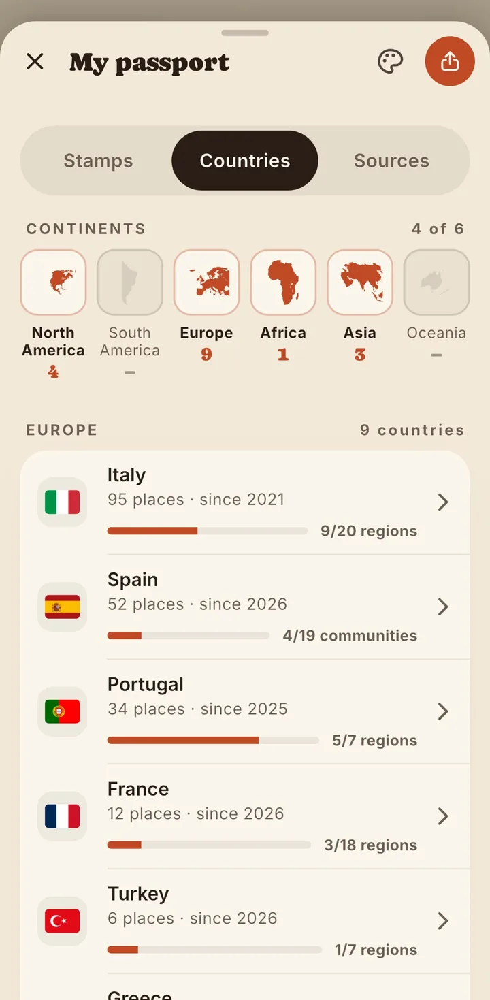
The same map in every shape you need, in four colorways: paper, mustard, lavender and forest.
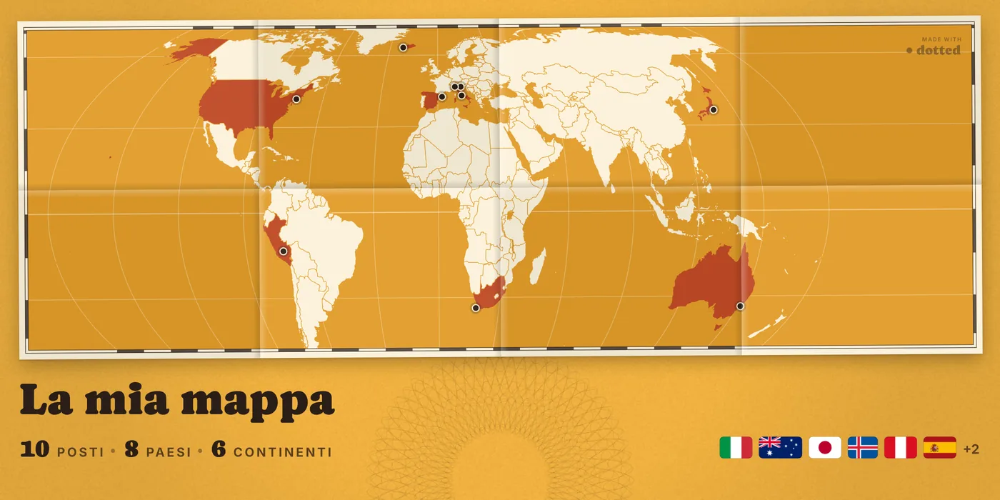
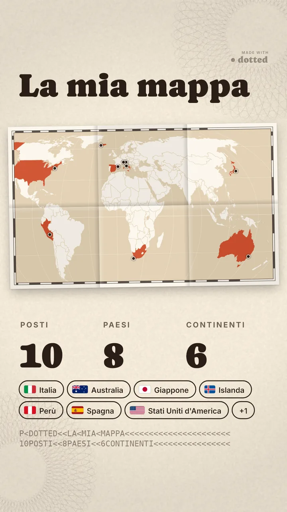
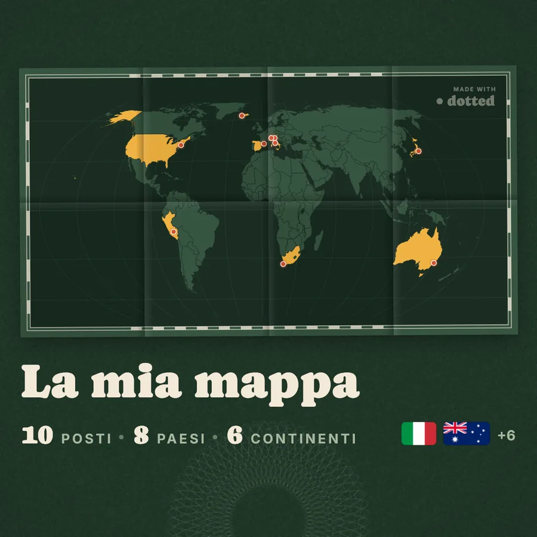
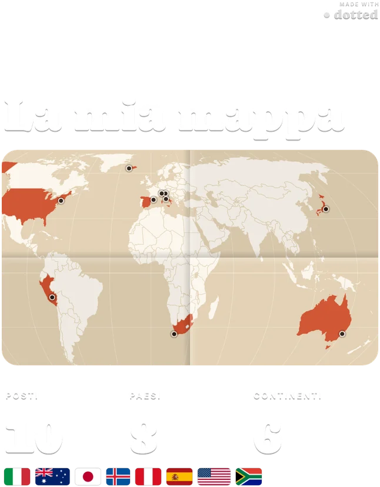
Dotted reads only where and when they were taken. Nothing is uploaded, and there's no account to create.
Put a dot on every place and see your world fill up.